Four real OS processes, each running the identical training loop on a different shard of data — the diagram follows one rank’s full lifecycle from process-group init through the gradient all-reduce that happens invisibly inside .backward().

| Node | Location | What it does |
|---|---|---|
| INITPG | train_ddp.py:setup() | dist.init_process_group(backend='gloo', rank, world_size) — this is a BARRIER: all 4 ranks must call it before any of them proceeds, forming the actual process group that later collective operations use. |
| SHARD | train_ddp.py:run_worker() | DistributedSampler gives each rank a genuinely different 1/world_size slice of the dataset — verified directly: rank 0's shard is exactly 1000 of the 4000 total samples, not the full set. |
| BACKWARD | train_ddp.py:run_worker() | The single most important line in the whole project: loss.backward() looks like an ordinary PyTorch call, but because the model is wrapped in DistributedDataParallel, this call transparently all-reduces gradients across all 4 ranks before returning. |
| DISTCHECK | compare_weights.py:max_pairwise_l2() | After training, every rank's saved weights are flattened and compared pairwise. Measured: exactly 0.0 for the DDP run (bit-for-bit identical), versus 0.3655 for a no-sync control trained on the same shards without gradient sharing. |
All 4 ranks initialize together, train on their own shard, and their gradients get synchronized on every single backward() call — by the end, every rank has learned from ALL the data, not just its own shard.
SPAWN → 4× [INITPG → SHARD → EPOCHLOOP → BACKWARD(all-reduce)] → SAVERANK → CLEANUP → COMPARE(0.0 apart)The exact same sharded setup, but WITHOUT the DDP wrapper — each rank's gradients never leave its own process, so each one learns a DIFFERENT model from only its own 1/4 of the data.
4× [SHARD → EPOCHLOOP → BACKWARD(no sync)] → SAVERANK → COMPARE(0.3655 apart)dist.init_process_group() and a real, verified DistributedSampler data shard per rank.loss.backward() transparently triggers an all-reduce across ranks purely because the model is wrapped in DistributedDataParallel — no explicit collective-communication call is visible in the training loop code.gloo backend (CPU-only) rather than nccl (GPU-optimized) — appropriate for a 4-process demo on one machine, but not representative of the multi-node, multi-GPU networking characteristics real large-scale training needs to handle.Normally, loss.backward() just computes local gradients via autograd and stores them in each parameter's .grad. When the model is wrapped in DistributedDataParallel, DDP registers autograd hooks on each parameter that fire as soon as that parameter's local gradient is computed — those hooks trigger an asynchronous all-reduce (average) of that gradient across all ranks in the process group, overlapping communication with the remaining backward computation for efficiency. By the time backward() returns, every rank's .grad for every parameter holds the identical, averaged gradient across all ranks — which is exactly why the post-training weights end up bit-for-bit identical: every rank applied the exact same averaged gradient at every step, even though each started from a different data shard.
Mechanically, the API barely changes — swap the backend string, and the same init_process_group/DDP-wrap/backward pattern holds, because that abstraction is the whole point of the collective-communication library design. What changes substantially: nccl's collectives are GPU-topology-aware (NVLink within a node, network fabric across nodes) and dramatically faster for GPU tensors, but you now have real network partition risk between nodes (a node dropping off mid-training needs a coordinated failure response — checkpoint-and-restart, or elastic training with torchrun's fault-tolerance features), real inter-node bandwidth bottlenecks that can make communication rather than compute the limiting factor, and node-heterogeneity risk (one slower node straggling and stalling the whole synchronous all-reduce) — none of which a single-machine 4-process gloo demo can expose, because there's no real network in the loop.
On its own, 0.3655 mostly just proves the point that no-sync training genuinely diverges — the specific magnitude is a function of this model's parameter count, initialization, learning rate, and how many steps of divergence accumulated, so it's not directly comparable to a different model/setup's L2 distance without normalizing (e.g. as a fraction of the weight vector's own norm, or tracking how it grows over training steps). What would make it more meaningful: plotting L2 distance across training steps to see the divergence curve — is it growing linearly, accelerating, or plateauing — which would tell you whether the four ranks' models are drifting apart at a constant rate (each seeing permanently different data) or converging toward different but stable local optima, a genuinely different question about the loss landscape.
Synchronous DDP is only as fast as its slowest rank — every rank's backward() all-reduce blocks until all ranks have contributed their local gradient, so a 3x-slower straggler means every other rank sits idle waiting on every single step, and the entire job runs at the straggler's pace, not the average pace. In production I'd first try to detect and evict/replace the bad hardware (most large training frameworks have straggler-detection heartbeats), and for jobs that can tolerate it, consider asynchronous or semi-synchronous training strategies (e.g. bounded staleness) that don't require every rank to fully synchronize every single step — though that trades off the exact reproducibility this demo's 0.0 L2 distance result depends on, since asynchronous updates no longer guarantee every rank ends up with identical weights.
It's a barrier because the process group is a shared coordination primitive — every rank needs to agree on who's in the group, what rank each member holds, and how to reach each other, before any collective operation (like the all-reduce inside backward()) can possibly work correctly. If it weren't a barrier — say rank 0 proceeded to a collective operation before rank 3 had joined the group — that collective would either hang waiting for a participant that hasn't registered yet, or worse, silently execute among a subset of ranks with no error, producing gradients that were 'synchronized' across only some of the ranks while the others trained independently — exactly the kind of silent correctness bug that the no-sync control in this project is designed to make visible and measurable rather than assumed away.